自然美丽的秘诀
每个角度都美丽精致的鼻型。
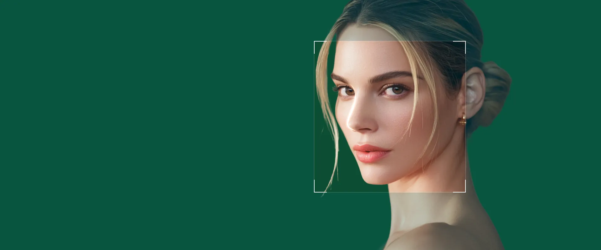
真正的美丽始于正常的功能
均衡的下颌，和谐的面容
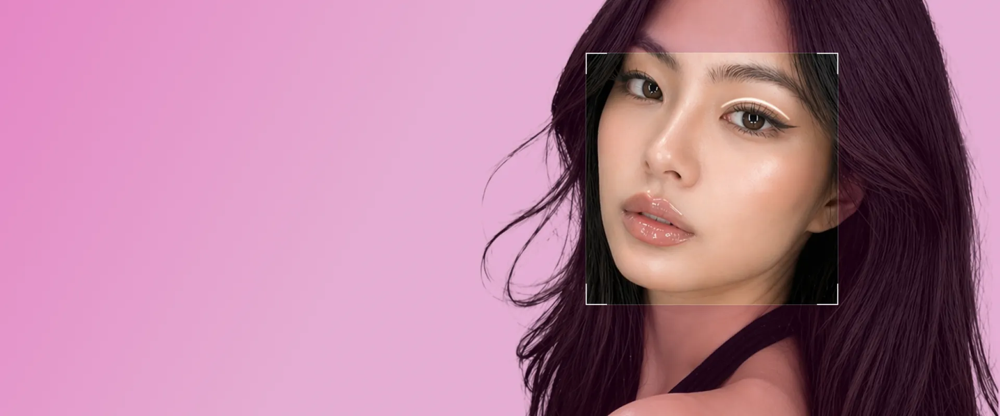
因美丽而引人注目的眼睛
恢复年轻灵动的双眼
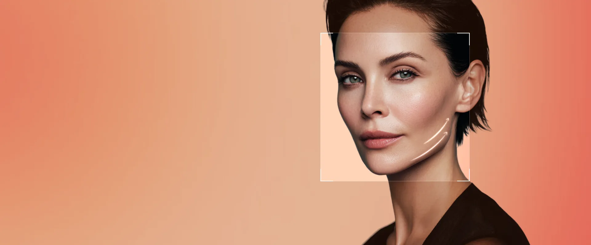
以数据证明的弹性
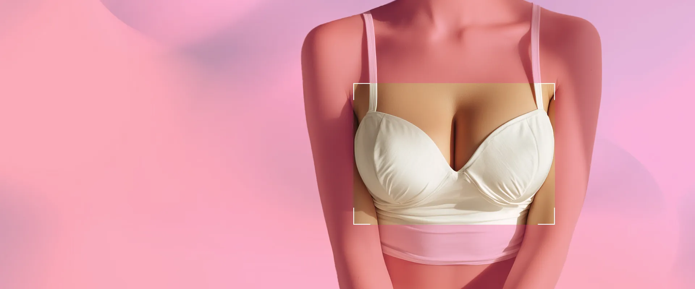
自然之美，自信焕新
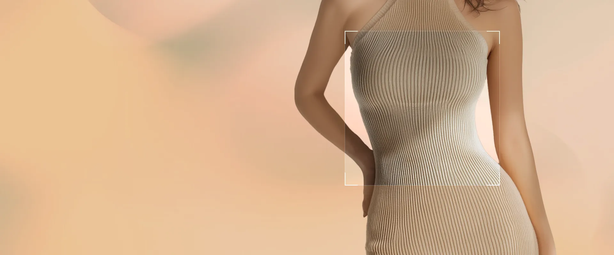
雕刻您应有的身形
精致、自信、独一无二的你
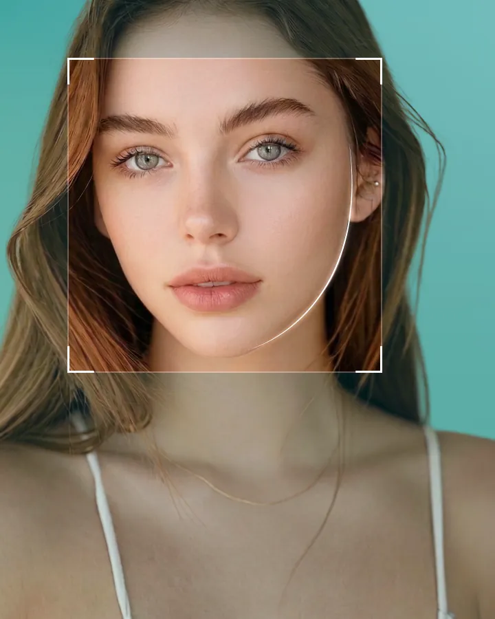
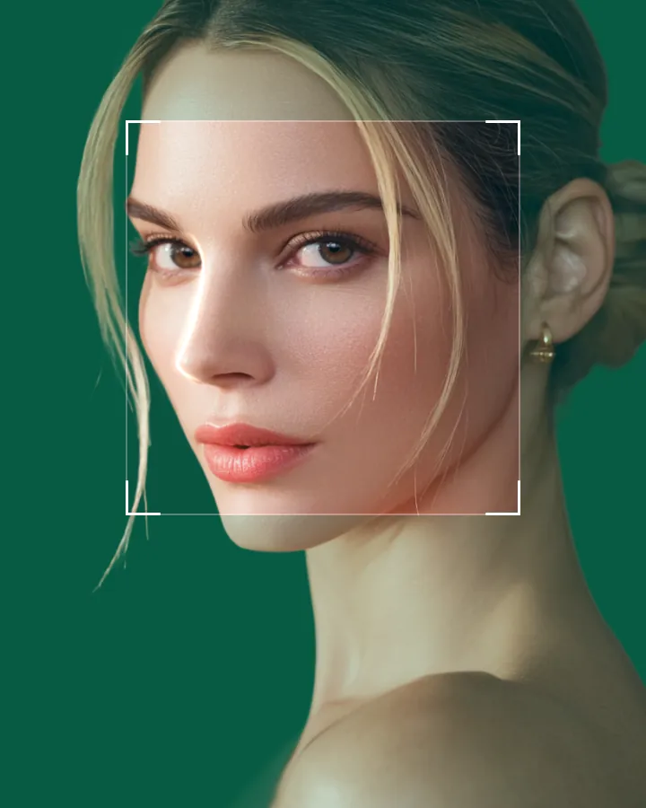
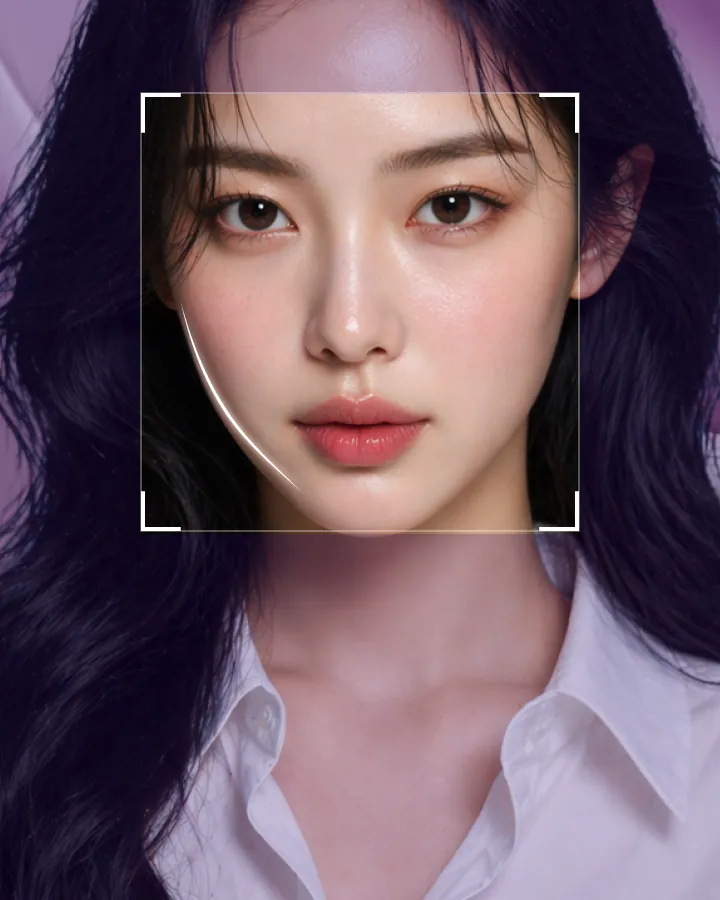
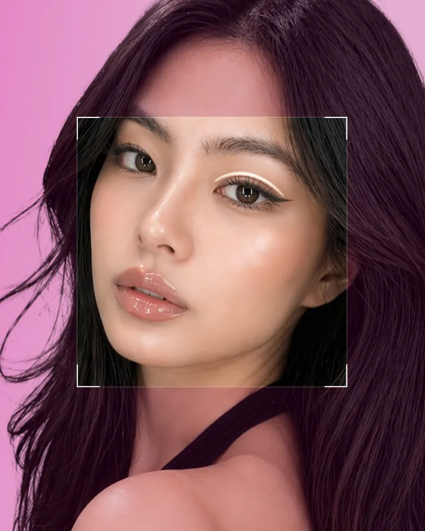
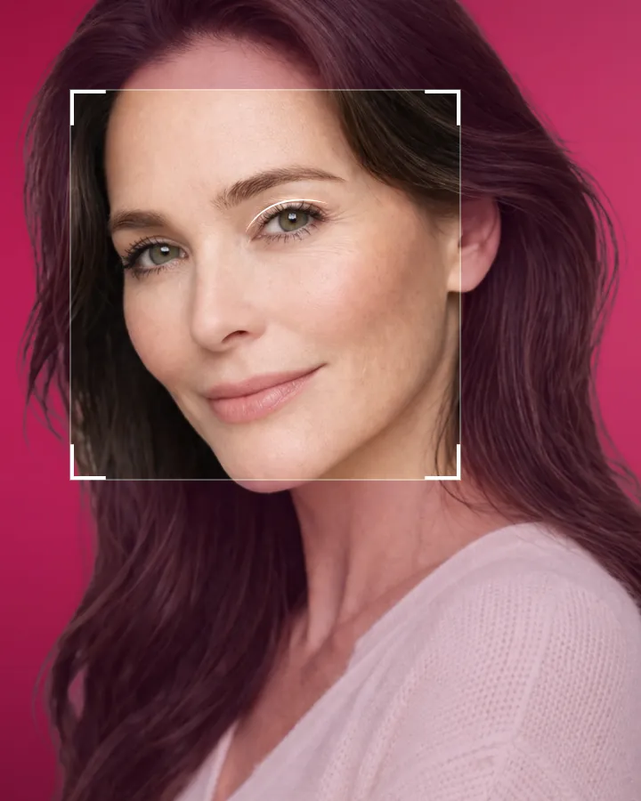
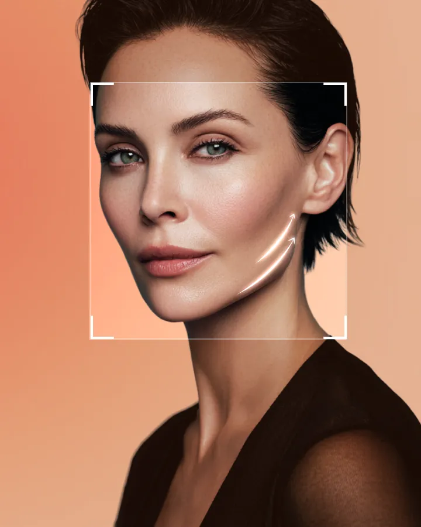
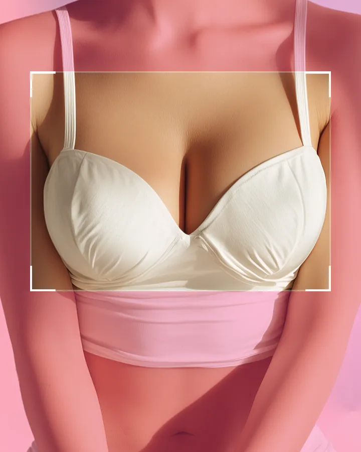
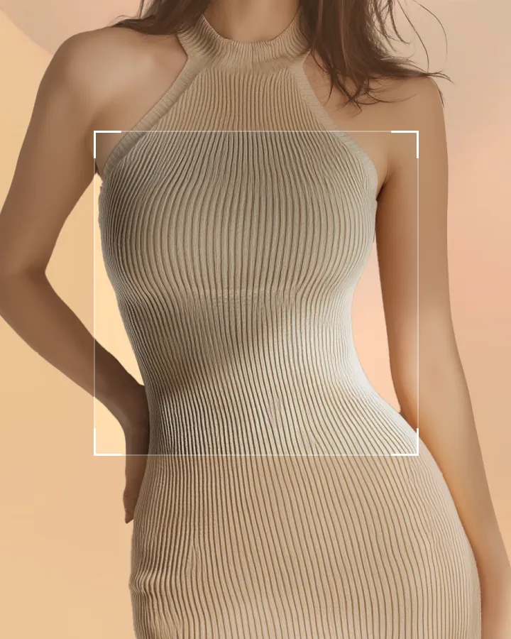
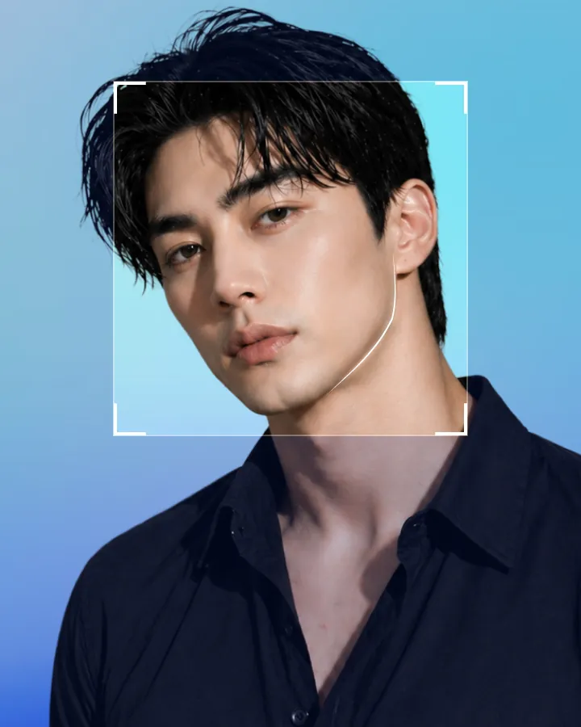
美丽仙境——以先进的医疗与服务超越美丽。
我的美丽，值得炫耀
暂无帖子
恢复才是真正的开始！专业术后管理
美丽在你，光彩四射
整形外科医生
眼整形 / 高难度眼修复 / 面部年轻化
鼻整形 / 妈生鼻 / 高难度修复
鼻整形 / 微峰鼻 / 高难度修复
鼻整形修复 / 肋软骨整形
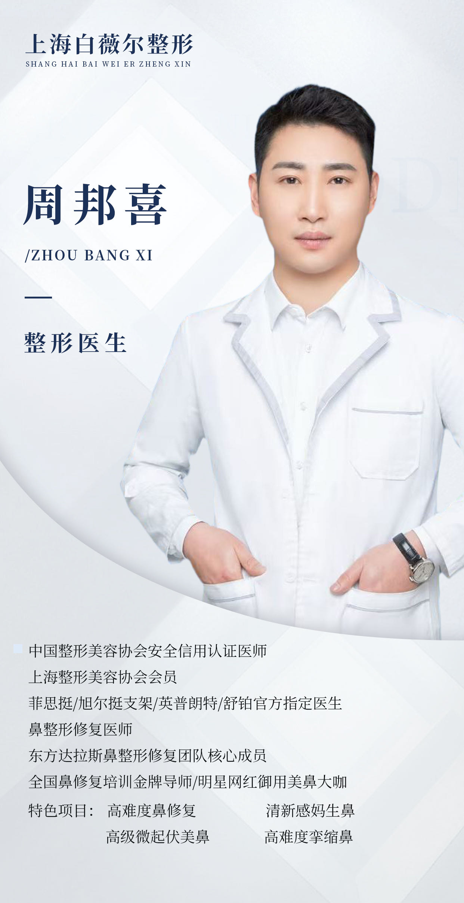
高难度鼻修复 / 挛缩鼻
眼周年轻化 / 口周美学
面部逆龄提升 / F-POINT
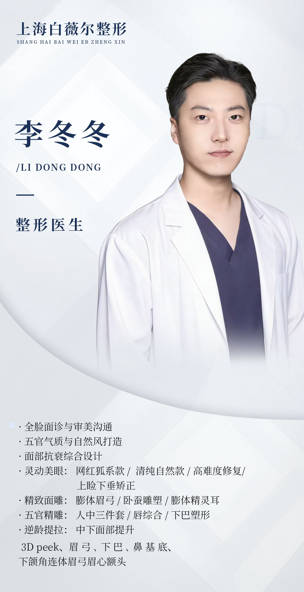
灵动美眼 / 精致面雕
乳房整形 / SMAS除皱
鼻整形 / 高难度鼻修复
脂肪塑形 / 马甲线
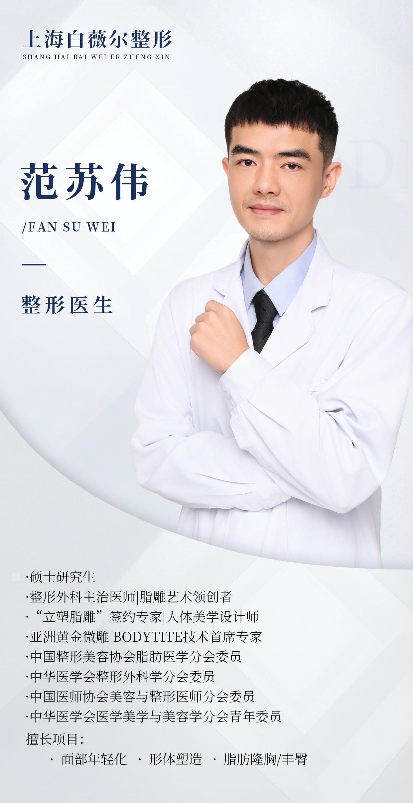
脂肪整形 / 年轻化 / 形体
面部抗衰 / 精灵耳 / 逆龄术
贴面耳矫正 / 精灵耳 / 抗衰提升
形体精雕 / 假体隆胸
舒适就诊所需的一切
概览
配备专业翻译人员，为国际患者提供个性化的咨询与服务，确保舒适与便利。
16-15F
14F
现代化的体检中心，提供快捷服务、放松的休息室，以及全面的医疗检查。
13F
专注先进眼部护理和安全美丽隆胸手术的专家医疗团队，提供值得信赖的效果.
12F
Exclusive 凡是与美 Petit 皮肤中心 治疗 and 技术, 使用正品产品和值得信赖的方法，实现精准有效的效果。
11-9F
自 2004 年起-grade 设施 with 先进 急救 systems, equipped with the 最新 surgical 技术，确保 安全 and 可靠 手术.
8-7F
私人病房配备个人电视与电脑，经验丰富的医护人员提供 24/7 护理支持，确保安全、快速、舒适的恢复。
5-6F
先进的手术室配备尖端手术设备与无菌环境，保障手术安全。
4F
个性化咨询的专属空间，涵盖整形外科、皮肤科、牙科与健康管理，以定制化服务传递美丽与价值。
3F
配备先进技术与严格安全体系，18 年专业医疗经验，提供一对一个性化护理。
2F
正畸与种植牙专属空间，提供先进治疗与方案，确保健康自信的笑容。
LF
为患者和访客提供温馨的大堂，配有舒适的等候区 a 舒适 咖啡厅，打造 愉悦 and 放松 氛围.
B1F
术后系统化护理与治疗、专业的恢复管理服务，支持安全顺畅的愈合。
附属楼
由皮肤科专家操作先进激光设备，提供个性化一对一方案，实现安全、精准、有效的皮肤护理。
暂无帖子.